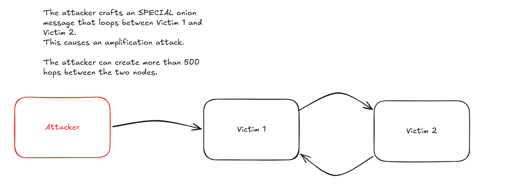

onion message jamming in the lightning network
BOLT 12 is almost fully deployed across Lightning implementations, and with it comes onion message forwarding on every major node. That's a good thing for offers, invoice requests, and async payments — but it also meaningfully expands the attack surface. The rate-limiting strategies that implementations ship today protect the node, but they don't protect the network. Worse, those same rate limits are exactly what makes a flooding attack effective.
This post walks through the flooding vector (including an amplification trick I want to highlight), and then through the four mitigation proposals I think are worth serious consideration. Most of this comes out of the Lightning Network Spec Meeting on March 9th, 2026, plus reading around it afterwards.
Background
BOLT 4 acknowledges that onion message routing is inherently unreliable and recommends that implementations apply rate limiting. A common additional measure is to only relay onion messages from peers with whom the node shares a channel.
All implementations that currently support onion message forwarding enforce incoming rate limits and drop any messages that exceed the threshold. LND, which has not yet released onion message forwarding, will also include rate limiting. This protects the node but does nothing to protect the onion message network itself. None of the current implementations use the backpropagation-based approach proposed by t-bast (discussed in section 3 below). Here is a brief overview of how each implementation handles rate limiting today:
- Core Lightning: Token bucket that allows up to 4 onion messages per second per peer. Peers that exceed the limit receive a warning message and further onion messages are silently dropped until tokens replenish.
- Eclair: Hard cap of 10 onion messages per second per peer. Only receives and relays onion messages to/from peers with channels.
- LDK: Deprioritizes onion messages rather than using a strict rate limit. Channel messages (including ping/pong) are always sent first. Onion messages are only enqueued when the outbound buffer is empty, capped at 32 messages per processing tick.
- LND: Per-peer mailbox of 50 messages with Random Early Drop (RED). Messages are probabilistically dropped starting at 80% capacity (40 messages), with drop probability increasing linearly until all messages are dropped at full capacity. An open PR adds a two-tier token bucket rate limiter (per-peer and global) applied at ingress before cryptographic processing, dropping (rather than queueing) over-limit messages, and restricts onion message acceptance to peers with open channels.
During the March 9th meeting, TTLs for onion messages were floated as a possible mitigation, mainly against replays. While useful for replay prevention, TTLs do not directly address the flooding problem since an attacker generates fresh messages rather than replaying old ones. The mitigations below focus on that core flooding vector.
The problem
The existing rate-limiting strategy is precisely what makes onion message jamming possible. An attacker can craft onion messages and propagate them across the network. Each intermediate hop requires a minimum of 86 bytes of payload (see Annex A). While BOLT 4 suggests two standard onion message sizes, 1,366 bytes (16 hops) and 32,834 bytes (382 hops), it does not enforce a maximum length. The actual upper bound is the Noise Protocol's 65,535-byte message limit, allowing a single onion message to span up to 761 hops.
By spinning up nodes and opening channels, the attacker floods the network with spam onion messages, triggering rate limits across enough nodes that legitimate messages are silently dropped alongside the spam. The high hop count makes this worse: because onion messages use source routing and intermediate nodes cannot inspect the full path, an attacker can craft a single message whose hops alternate back and forth between two victim nodes (e.g., Victim 1 → Victim 2 → Victim 1 → Victim 2 → ...), bouncing over 500 times within a single worst-case message. Each victim sees the other as the source of the flood, so per-peer rate limiting is applied against the other victim rather than the attacker. One crafted message causes amplified damage on the link between two honest nodes.

Mitigations
Simply limiting the maximum number of onion hops does not fix the issue on its own, as the attacker just needs more entry points to achieve the same congestion. However, it does help by raising the cost of an attack, which is the same approach Tor adopted to mitigate similar flooding. It works best when combined with other mitigations. After reviewing several proposals, here are the four I think best address this issue.
1. Upfront fees (per-message unconditional payment)
Introduce a cost for sending onion messages, making large-scale flooding economically impractical. Carla Kirk-Cohen's upfront HTLC fee proposal (lightning/bolts#1052) provides the most promising foundation. Originally designed for fast channel jamming, the mechanism extends naturally to onion messages, avoiding separate anti-jamming systems for payments and messages.
For HTLCs, nodes advertise an unconditional fee as a percentage of their success-case fees via a new TLV in channel_update, paid at each hop regardless of whether the payment succeeds. Simulations show 1% is sufficient, capped at 10% to prevent nodes from intentionally failing payments to collect the upfront portion. For onion messages, nodes advertise a flat per-message fee instead, included in the onion payload and deducted at each hop. Nodes that receive a message with insufficient fees for the next hop simply drop it. Notably, under a spam attack the targeted nodes actually profit from forwarding fees rather than suffering from it.
Settlement. No new protocol messages are needed. The onion message carries the fee in its encrypted per-hop payload, so both peers know the exact amount. The forwarder constructs the updated commitment transaction (crediting itself the fee) and sends commitment_signed. The sender confirms with revoke_and_ack, at which point the forwarder relays the message. If the sender does not confirm, the forwarder does not relay. Alternatively, peers could relay immediately and settle owed fees in a single commitment_signed after a message count or time interval, at the cost of per-channel fee accounting until settlement. No HTLCs are needed: the onion message acts as an implicit channel state update. This generalizes to channel jamming, where the only difference is that an HTLC output is also added to the commitment.
Spec changes required: (1) A new TLV in channel_update for the flat per-message onion forwarding fee. (2) A new TLV in the onion message per-hop payload (encrypted_data_tlv) carrying the fee for that hop. (3) A channel_id field in onion_message so the forwarder knows which channel to settle against.
Limitations and tradeoffs: A sufficiently funded attacker can still pay the fees, though at a much higher cost than today's free flooding. Coupling onion messages to the commitment dance means forwarding depends on channel liquidity and state machine availability, adding complexity to what is currently a stateless relay. This also makes the existing practice of only forwarding to channel peers a hard requirement, since peers without a channel cannot settle the fee. Per-message settlement also increases p2p overhead: today forwarding is a single message, but with upfront fees it becomes onion_message + commitment_signed + revoke_and_ack at every hop (there are actually two commitment_signed and two revoke_and_ack to complete the dance, but those are at least an order of magnitude smaller than onions). The bigger cost is latency. Without fees it is 0.5 round trips (onion_message ->). With upfront fees it is 1.5 round trips (onion_message + commitment_signed ->, <- revoke_and_ack + commitment_signed, revoke_and_ack ->). Under heavy load the last half trip can be combined with the next onion message (revoke_and_ack + onion_message + commitment_signed ->), bringing it down to ~1.0 round trips, a ~2x latency increase. Batching reduces the frequency of settlement but adds complexity.
References:
- lightning/bolts#1052
- Unjamming Lightning: A Systematic Approach (eprint 2022/1454)
- Unjamming Lightning (Chaincode Research)
2. 3-hop limit + proof-of-stake based on channel balances (hard/soft leash)
This approach, proposed by Bashiri and Khabbazian at the University of Alberta (Financial Cryptography 2024), has two components.
Component 1, leashing the hop count:
- Hard leash: A strict maximum hop count (e.g., 3 hops). The rationale draws from Tor, which achieves meaningful anonymity with just three hops, though it allows expanding up to 8 hops when needed. Since onion messages route through peers rather than channels, most nodes are reachable within a short hop distance. Requires changes to the onion message format to embed and verify the hop limit.
- Soft leash: Instead of a strict limit, the sender must solve a proof-of-work challenge whose difficulty scales exponentially with hop count. Each node announces a PoW difficulty target via gossip, adjusting dynamically based on incoming message rate. This preserves flexibility for longer paths while making high-volume long-path spam prohibitively expensive. Can be adopted without altering the onion message format.
Component 2, proof-of-stake forwarding rules. Instead of uniform rate limits, each node sets per-peer rate limits proportional to that peer's aggregate channel balance (as advertised via gossip): αA × FB, where αA is a tunable parameter and FB is the sum of capacities of channels owned by B. Well-capitalized nodes earn higher forwarding allowances, while underfunded attacker nodes get minimal throughput. The paper demonstrates that an adversary cannot meaningfully degrade the service unless they control a significant fraction of total network funds.
Limitations and tradeoffs: A 3-hop limit shrinks the sender's anonymity set, and the Lightning Network's hub-concentrated topology makes origin inference easier than in Tor. The proof-of-stake component advantages large established nodes and may create centralization pressure. An attacker could open large channels solely to inflate their gossip-visible balance, with capital lockup as the only cost. The soft leash adds computational overhead for honest senders needing longer paths. Nodes with only private (unannounced) channels would have zero gossip-visible capacity, yielding a rate limit of zero and shutting them out of onion message forwarding entirely, including privacy-conscious users and mobile nodes.
Reference: Bashiri & Khabbazian, FC 2024
3. Bandwidth metered payment (paid onion messaging sessions)
Proposed by roasbeef, this approach also makes forwarding compensated and flooding expensive, like upfront fees. The key difference is the payment model: upfront fees require no application-layer state (no session IDs, no bandwidth counters) and settle per-message through the existing channel state machine, while bandwidth metered payment adds per-session state (~40 bytes per session for tracking session IDs, expiry, and remaining bandwidth) and settles once upfront via an AMP payment.
How it works: Inspired by HORNET's two-phase design, the sender first sends an AMP payment that drops off fees at each intermediate hop (priced via sats_per_byte and sats_per_block rates advertised in node_announcement) and delivers a 32-byte onion_session_id along with an expiry height. The receiver accepts by pulling the payment or rejects by failing any HTLC split. Once accepted, the sender includes the onion_session_id in the encrypted_data_tlv of subsequent onion messages. Forwarding nodes check session validity and remaining bandwidth before relaying, adding roughly 40 bytes of per-session state.
Limitations and tradeoffs: The sender can use distinct session IDs per hop (since they are inside the per-hop encrypted_data_tlv), so colluding nodes cannot correlate messages by session ID alone. However, at any single hop, all messages sharing the same session ID are linkable, unlike stateless onion messages where every message looks independent. Payment and forwarding are not atomic, so a node could take the payment and refuse to forward, though tit-for-tat (small sessions first) mitigates this. Requires a channel between every hop for AMP settlement, unlike base onion messages. Setting up a new session incurs a similar round trip overhead as upfront fees, since the AMP payment must complete the commitment dance at each hop. However, this cost is paid only once per session; subsequent messages within the session are forwarded without additional settlement until the prepaid bandwidth is exhausted.
Reference: roasbeef, lightning-dev 2022-02
4. Backpropagation-based rate limiting (onion_message_drop)
Proposed by t-bast after discussions with Rusty Russell at the Oakland Dev Summit, this scheme uses a lightweight backpressure mechanism that statistically traces spam back to its source.
How it works: Nodes apply per-peer rate limits on incoming onion messages (e.g., 10/second for channel peers, 1/second for non-channel peers). When relaying, a node stores only the node_id of the last sender per outgoing connection.
When a message exceeds the rate limit, the receiver sends an onion_message_drop back to the sender, which identifies the last peer that forwarded on that link and relays the drop signal backward, halving that peer's rate limit. If the peer stops overflowing, the rate doubles every 30 seconds until it returns to the default.
The onion_message_drop includes a shared_secret_hash (BIP 340 tagged hash of the Sphinx shared secret), allowing the original sender to recognize when the drop propagates back to them and retry via a different path.
Limitations and tradeoffs: Since each node only stores the last incoming node_id per outgoing connection, the drop signal may sometimes hit the wrong peer, though the correct sender is statistically penalized proportionally. The mechanism is reactive: legitimate users experience degraded service before backpressure takes effect. The attacker pays nothing beyond channel opens, so a persistent adversary can sustain low-grade degradation. A malicious node could also send fake onion_message_drop signals to artificially halve peers' rate limits and suppress legitimate forwarding without actual congestion. The bounce amplification attack described above is particularly effective against this scheme, as it directly weaponizes the backpressure mechanism against the victims.
References:
Conclusion
Each of the four mitigations addresses a different aspect of the problem. Upfront fees and bandwidth metered payment both make flooding expensive by compensating forwarding nodes, but differ in mechanism: upfront fees are stateless and per-message, while bandwidth metered payment uses stateful session-based bulk prepayment better suited for sustained communication. Hop leashing with proof-of-stake limits the attacker's reach and ties forwarding capacity to economic commitment. Backpropagation-based rate limiting offers a lightweight, reactive defense that requires no payment infrastructure. Each comes with meaningful tradeoffs and differences in implementation and deployment complexity.
LND has completed onion message forwarding as part of its BOLT 12 roadmap, with the final PR now merged and awaiting release. Once released, all major implementations will support the protocol, significantly expanding the attack surface. If BOLT 12 becomes the standard method for invoice requests, offers, refunds, and asynchronous payments, a sustained jamming attack would cause a severely degraded user experience.
Channel jamming illustrates how difficult it is to retrofit mitigations once a vulnerability is well established. Significant research and BOLTs proposals are underway, but reaching consensus and deploying a solution across all implementations takes time. Tor faced a similar challenge when a prolonged DDoS attack degraded its network for months in late 2022, requiring defenses to be built under pressure. With onion message support now reaching full network coverage, we have a window to design and ship mitigations early, and I think we should take it.
Thanks to Matt Morehouse and Gijs van Dam for reviewing drafts of this post.
Annex A: maximum hop count derivation
Each intermediate hop in an onion message requires a minimum of 86 bytes of payload, broken down as follows:
| Component | Bytes | Notes |
|---|---|---|
| BigSize length prefix | 1 | Length of the per-hop payload |
encrypted_recipient_data TLV wrapper | 2 | 1 byte type + 1 byte length |
| Encrypted blob | 51 | 35 bytes ChaCha20-Poly1305 ciphertext (encoding the encrypted_data_tlv with the 33-byte next_node_id) + 16-byte Poly1305 authentication tag |
| HMAC | 32 | |
| Total | 86 |
BOLT 4 suggests two onion message sizes (1,366 and 32,834 bytes) but does not enforce a maximum length. The actual upper bound is the Noise Protocol's maximum message size of 65,535 bytes. An attacker can craft arbitrarily large onion messages up to this limit, maximizing the number of hops and therefore the amplification of a single spam message.
However, the onion packet is nested inside a Lightning message structure. The full Noise message contains:
| Field | Bytes | Notes |
|---|---|---|
| Message type (513) | 2 | Lightning message type identifier |
blinding_point | 33 | Route blinding point, separate from the onion packet |
onion_routing_packet length | 2 | u16 length prefix |
| Packet version | 1 | Onion packet header |
Packet public_key | 33 | Onion packet header |
hop_data | N | Onion payload (raw bytes, no length prefix) |
| Packet HMAC | 32 | Onion packet header |
| Total | 103 + N |
The onion packet header accounts for 66 bytes (1 version + 33 public key + 32 HMAC), and the enclosing Lightning message adds another 37 bytes (2 message type + 33 blinding point + 2 length prefix). The available hop data is therefore: 65,535 − 103 = 65,432 bytes.
| Packet size | Hop data bytes | Intermediate hops | + Final hop | Total hops |
|---|---|---|---|---|
| 1,366 bytes (suggested) | 1,300 | 15 | 1 | 16 |
| 32,834 bytes (suggested) | 32,768 | 381 | 1 | 382 |
| 65,535 bytes (worst case) | 65,432 | 760 | 1 | 761 |
In the worst case, a single onion message can fan out across 761 hops, nearly doubling the amplification factor compared to the largest suggested packet size.